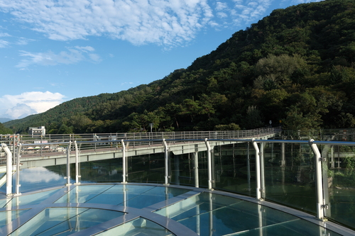
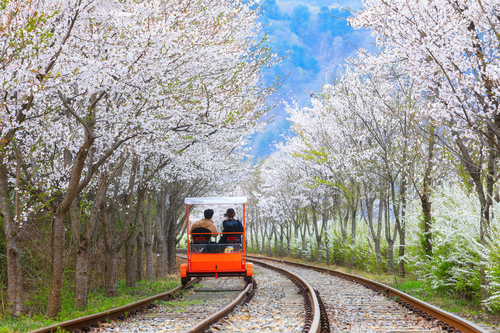
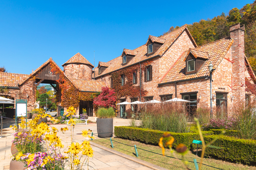

나는솔로 : 1박2일로 혼자 떠나는 느긋 여행!
여행코스 설명
혼자만의 시간을 갖고 싶다면 춘천으로 떠나보세요. 자연과 함께 느긋하게 하루를 채우며 자신만의 속도로 여행을 즐길 수 있는 코스를 소개합니다. 이번 1박 2일 여행은 의암호 스카이워크, 강원도립화목원, 삼악산 호수 케이블카와 같은 경치 좋은 명소들부터 강촌레일바이크와 제이드가든까지 여유로운 힐링을 만끽할 수 있는 일정으로 구성했습니다.
여행코스 안내
코스
- 1 의암호스카이워크
- 2 강원도립화목원
- 3 삼악산호수케이블카
코스
- 1 강촌레일바이크
- 2 제이드가든


의암호스카이워크
1일차 1코스2014년 춘천시 의암호 주변 김유정문인비와 송암스포츠타운 방면을 연결하는 길이 100m의 교량 중간에 만들어진 스카이워크는 6개월간 약 30만명의 방문객이 몰릴 정도로 큰 인기를 끌고 있다. 스카이워크는 허공을 걷는 듯한 스릴을 느낄 수 있도록 전 구간을 투명 강화 유리로 마감했다.
- 주소 강원특별자치도 춘천시 칠전동 485
- 소요시간 20분
-
이용시간
09:00 ~ 18:00
(11월 중순~3월 중순 동절기 휴장) - 문의 및 안내 033-253-3700
- 홈페이지 없음

강원도립화목원
1일차 2코스공립수목원인 강원특별자치도립화목원은 1996년 조성을 시작하여 1999년에 완공되어 개장하게 되었다. 반비식물원, 암석원, 토피어리원 등 9개 주제원으로 구성되어 있으며 국립수목원으로부터 산림생명자원관리기관으로 지정되어 있다.
- 주소 강원특별자치도 춘천시 화목원길 24
- 소요시간 60분
- 이용시간 하절기(3월~10월) 19:00-18:00 / 동절기(11월~2월) 09:00-17:00
- 문의 및 안내 033-248-6690~1
- 홈페이지 http://gwpa.kr

삼악산호수케이블카
1일차 3코스활과 부메랑을 형상화한 춘천 삼악산 호수 케이블카는 삼천동에서 의암호를 지나 삼악산을 연결하는 3.61km의 케이블카이다. 오스트리아 도펠마이어사의 최신형 기내를 도입한 크리스털 기내는 바닥이 통유리로 되어 있어 아름다운 의암호의 모습을 여과 없이 볼 수 있다.
- 주소 춘천 남면 충효로 1503 일원
- 소요시간 60분
-
이용시간
9:00 ~ 18:00
(휴관일 : 1월 1일, 설날, 추석, 매주 월요일) - 문의 및 안내 033-264-3980
- 홈페이지 https://www.samaksancablecar.com/

강촌레일바이크
2일차 1코스멈춰버린 경춘선에 새로운 생명을 불어넣어 달리고 있는 김유정 레일파크는 국내 최대, 최장의 레일바이크 관광지로 다양한 콘텐츠의 터널과 수려한 북한강의 절경을 즐길 수 있다. 또한 국내 최초 VR 레일바이크 서비스를 제공하고 있으며 춘천을 찾는 내국인, 외국인 관광객들에게 인기가 많다
- 주소 강원특별자치도 춘천시 실레길 25
- 소요시간 90분
-
이용시간
09:30 ~ 18:00
동절기 09:30 ~ 17:00 - 문의 및 안내 033-261-4650
- 홈페이지 https://www.railpark.co.kr

제이드가든
2일차 2코스‘숲속에서 만나는 작은 유럽’을 모토로 한 제이드 가든은 제이드팰리스 골프장 부근 약 16만㎡ 규모로 24개의 테마로 조성됐다. 제이드 가든은 자연의 계곡 지형을 그대로 살려 화훼나 수목, 건축 양식과 건물 배치 등을 유럽풍에 맞추었다. 약 5만 평의 규모로 계곡 사이의 지형을 따라 길게 이어지며, 만병초류와 단풍나무류 붓꽃류 블루베리 등 3,000종의 식물을 보유하고 있다. 또한 드라이가든과 웨딩가든 이끼원, 로도덴드론가든 등 모두 24개의 분원으로 나뉘어져 있다.
- 주소 강원특별자치도 춘천시 화목원길 24
- 소요시간 90분
- 이용시간 09:00~19:30 (입장마감 18:30)
- 문의 및 안내 033-260-8300
- 홈페이지 없음